Q03 · 时间轴与来源跳转 — 浏览器证据（虚构样例）
截图来自 http://127.0.0.1:1429/visual-preview.html 的生产 React 页面（内存 IPC 适配），数据全部为虚构样例；用于界面与交互证据，不替代 Q04 原生 App 验收。浏览器未模拟通知 API，右下角“提醒状态暂不可用”是既有预览限制。
时间轴：领域、年份与事件类型
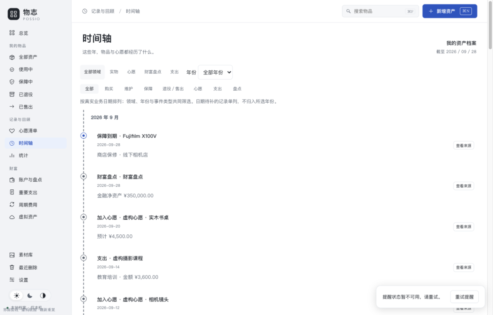
1280×820 浅色 · 全部领域 36 条事件，事件带「查看来源」按钮。
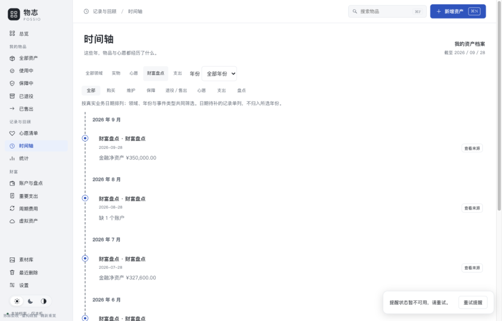
财富盘点领域：只显示盘点事件；完整盘点显示净资产，不完整显示缺 N 个账户。
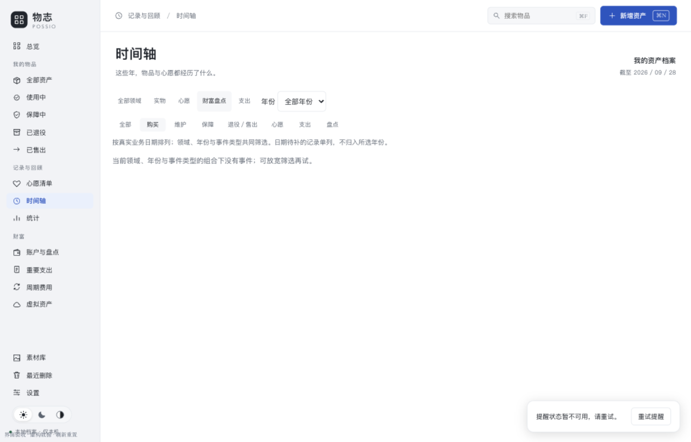
领域 × 事件类型的空组合给出明确空态，年份选项保持稳定。
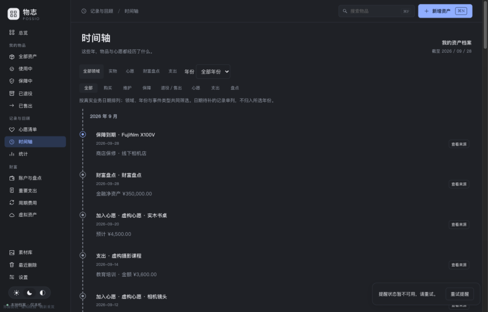
1280×820 深色。
来源往返（从时间轴打开源记录）
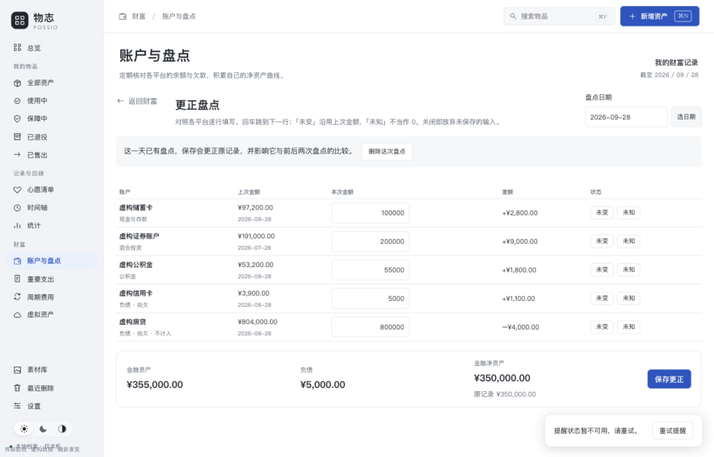
盘点事件 → 财富页打开该份历史盘点（更正盘点，expectedId 保护生效）；关闭不保存。
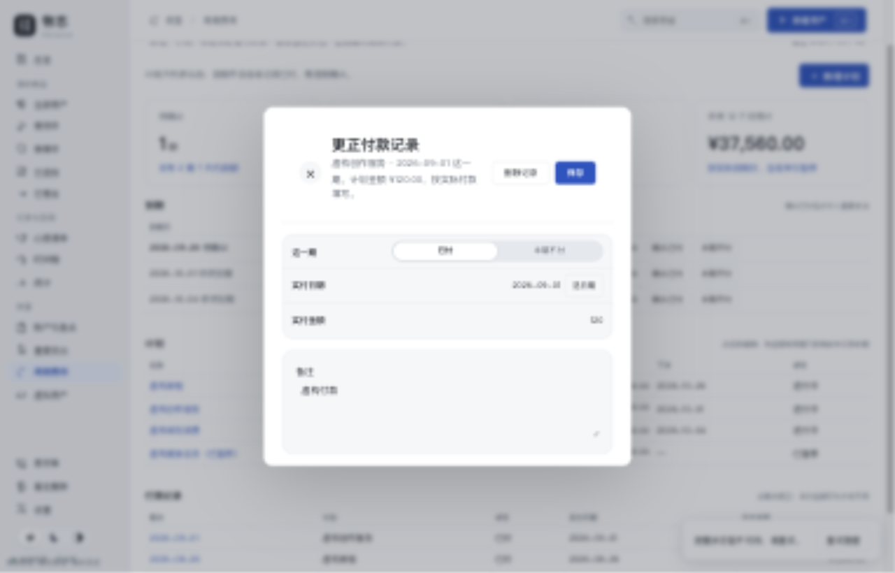
付款事件 → 周期页定位到该期实付记录（更正付款记录），精确到期次。
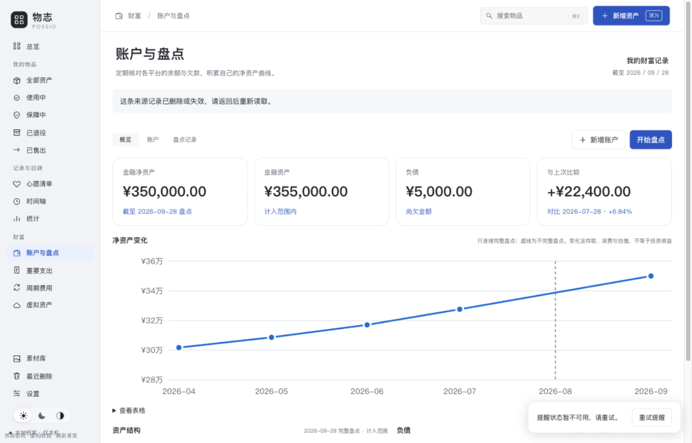
?source=missing 时来源校验失败：页面顶部提示并刷新列表，不弹任何编辑器、不误开同名记录。
综合回顾
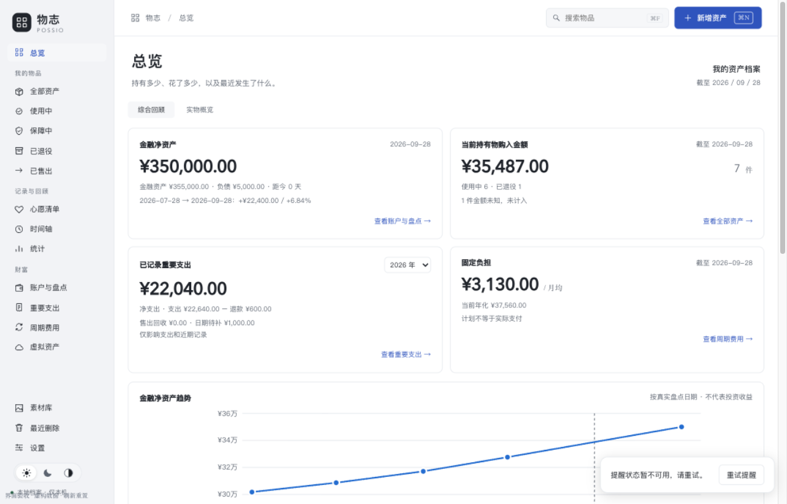
四类摘要与净资产趋势（Q02 行为保持）。
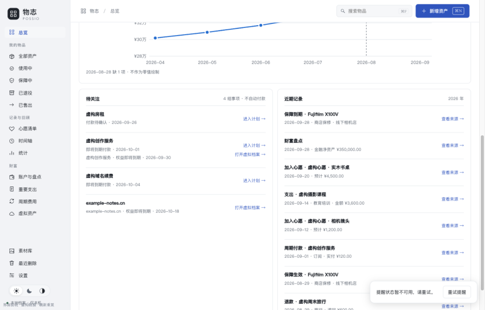
待关注组合保留「进入计划／打开虚拟档案」双入口；近期记录为统一投影（含盘点），每条带「查看来源」。
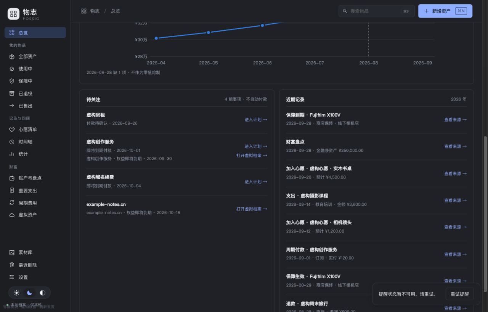
深色对照。
窗口尺寸
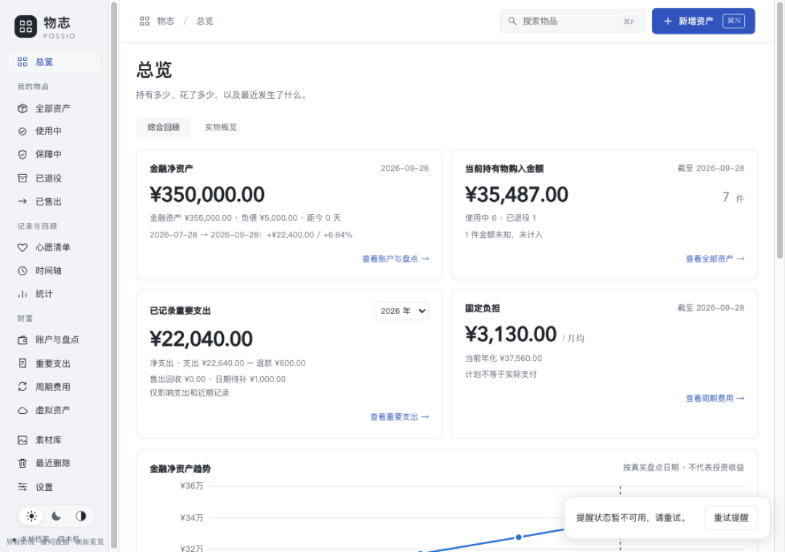
1080×760：document.scrollWidth=1080，main scrollWidth=clientWidth=900，无横向裁切。
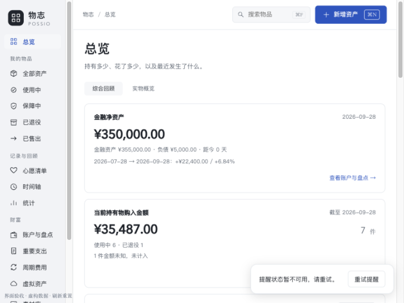
800×600：单列纵向滚动，document.scrollWidth=800，main scrollWidth=clientWidth=640。
仅文字记录的交互证据（无截图）
- 虚拟资产事件 → 打开对应档案编辑框（example-notes.cn）；关联计划的虚拟事件金额为空，费用只经付款。
- 心愿事件按稳定 ID 打开：同名「虚构心愿 · 相机镜头」两条（¥8,800 / ¥1,200），点击哪条打开哪条。
- 独立支出/退款事件 → 支出页打开该笔编辑框；实物购入 → 物品完整档案。
- 年份传递：综合页选 2025 → 查看重要支出落在 2025；返回综合页恢复年份与滚动位置（300px 往返一致）。
- 返回恢复：时间轴筛选（领域）与滚动位置在来源往返后恢复；键盘 Tab/Enter 可打开来源。
交互证据由 Ego Lite 语义操作取得（其 Page.captureScreenshot 持续超时，截图改用应用内浏览器）；两套浏览器访问同一预览服务。